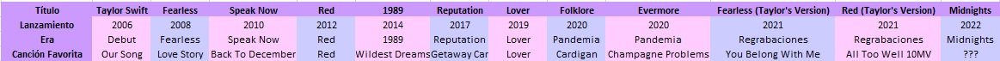
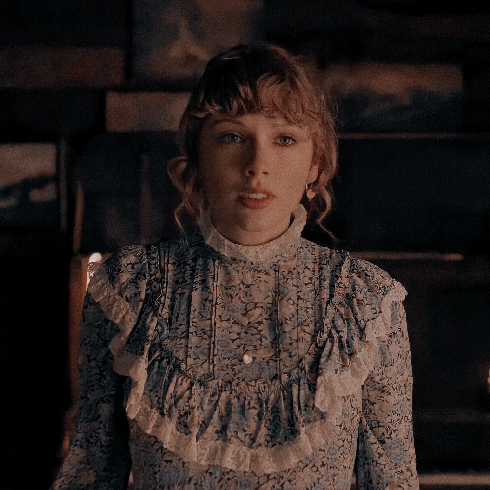
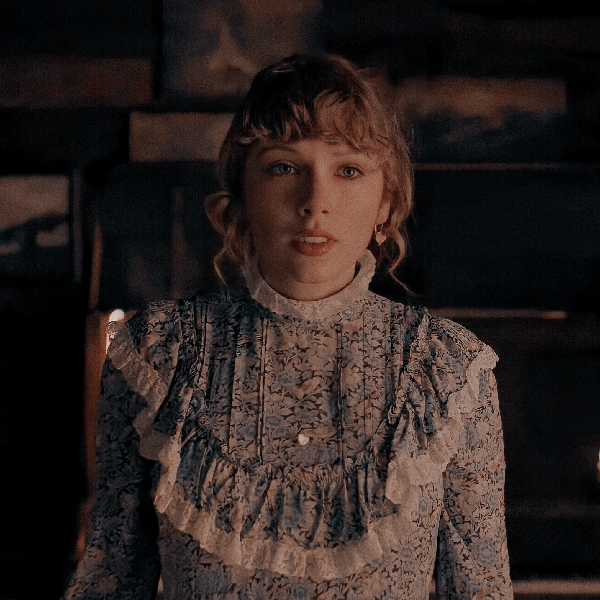

La carrera de Taylor inició en 2006 cuando Debut, su primer álbum, vió a la luz. Desde ese entonces Taylor ha publicado música de manera constante y no ha perdido contacto con sus fans. La historia de Taylor con su antigua disquera es larga y triste pero, a modo de resumen, vamos a decir que en 2018 rompe lazos con su antigua disquera Big Machine Records y firma con Universal Music; sin embargo, los derechos de las grabaciones originales de sus primeros seis álbumes se quedaron con la antigua disquera. Meses después Big Machine Records fue adquirida por Ithaca Holding, empresa que pertenece a Scooter Braun, con quien Taylor había trabajado anteriormente. Con la adquisición, el ejecutivo se hizo del catálogo de la cantante y ya no le permitió adquirir los derechos de su música. Scooter, que ha trabajado con artistas como Justin Bieber, Rihanna y Ariana Grande, fue señalado públicamente por Swift de bullying y acoso, una denuncia que generó rencillas entre ambos. En 2019 Taylor también anunció que Braun vendió sin su conocimiento los derechos de los primeros seis álbumes de estudio a una empresa de capital privado. La transacción fue valuada en 300 millones de dólares.
"Ahora Scooter me ha despojado del trabajo de mi vida, del que no tuve la oportunidad de comprar. Básicamente, mi legado musical está a punto de caer en manos de quien ha intentado desmantelarlo", comentó Taylor en aquel momento.
Taylor no cuenta con los derechos de las grabaciones originales de dichas producciones, por lo que no puede retomarlos por derechos de autor. Pero sí es propietaria de las composiciones, así que puede volver a grabarlas con su nueva firma discográfica una vez que el álbum haya cumplido 5 años desde su lanzamiento.
En la actualidad, además de sacar nueva música, Taylor nos ha sumergido en las eras de las regrabaciones, haciendonos revivir toda la emoción que sentíamos hace muchos años por aquellas canciones.
Okay! Ahora que sabemos la historia musical de Taylor y el por qué de las regrabaciones, vamos a ver su discografía completa.
A continuación podrás visualizar una tabla completa que contiene en cada álbum el título, año de lanzamiento, era a la que pertenece y mi canción favorita de cada uno de ellos.
Debut-2006
Taylor Swift es el álbum debut homónimo de Taylor, lanzado a través de Big Machine Records en los Estados Unidos y Canadá el 24 de octubre de 2006, e internacionalmente el 18 de marzo de 2008. Principalmente, el álbum se enfoca en las perspectivas de vida de ella como adolescente, lidiando con las relaciones románticas, las amistades y la inseguridad. Taylor Swift es principalmente un disco country con elementos pop y pop-rock.
Taylor Swift fue nominada a Álbum del año en los Premios de la Academia de Música Country de 2008 y ayudó a Swift a ganar elogios, incluida una nominación al Grammy como Mejor Artista Nuevo. El álbum encabezó la lista Billboard Top Country Albums de EE.UU. durante veinticuatro semanas y fue el álbum con más tiempo en el Billboard 200 de la década de 2000.
La era Debut está marcada por la ingenuidad, la adolescencia y la búsqueda de un amor real y verdadero. Podemos ver a Taylor luciendo sus clásicas botas estilo cawboy y vestidos estampados muy cercanos al country, además de su melena dorada llena de rulos y suelta al aire.
Fearless-2008
Fearless es el segundo álbum de estudio de Taylor Swift. El álbum fue lanzado el 11 de noviembre de 2008 por Big Machine Records. Fearless fue el álbum que llevó a Taylor más allá de country, Love Story fue lanzado como sencillo y se convirtió en un exito vendiendo más de 8.1 millones de copias en todo el mundo.
Fearless fue un gran avance internacional y un gran éxito comercial para ella debutando en el No. 1 en los Estados Unidos y luego se convirtiéndose en el álbum más vendido de 2009, vendiendo más de 3.2 millones de copias. Fearless le dio a Taylor, que tenía 18 años en ese momento, la distinción de ser el artista más joven de la historia en tener el álbum más vendido del año.
. "Fearless" se siente como ser una adolescente. Tiene la brillante esperanza de una chica joven emocionada por finalmente entrar en la edad adulta ("Fearless", "Fifteen"), impaciente por vivir los romances en los que ha crecido ("Love Story"), reprendiendo a sus enamorados por no darse cuenta de ella. ("Hola Stephen", "Me perteneces"). Espera un futuro fuera de la escuela y lejos de su pequeña ciudad natal. Incluso en medio de la silenciosa devastación de "White Horse", Taylor afirma que "algún día encontrará a alguien que realmente la trate bien". Ella mapea el mundo interior de una niña que espera que comience su vida real, para poder bajarse de las gradas y deshacerse de esta fase incómoda.
A lo largo de esta era vamos a continuar viendo a Taylor con sus ondas doradas sueltas y atuendos de estilo sencillo y romántico, muy cerca de sus raíces country.
SpeaK Now-2010
Este es el tercer álbum de estudio de Taylor Swift. Fue lanzado el 25 de octubre de 2010 por Big Machine Records. Escrito en su totalidad por Swift como seguimiento de Fearless, Speak Now expande el estilo pop country de su trabajo anterior y presenta temas líricos que incluyen amor, romance y desamor. Speak Now se incluyó en la lista de Rolling Stone de "50 Mejores Álbumes Femeninos de Todos los Tiempos" en 2012, ubicándose en el número cuarenta y cinco. Esto le dio a Swift, de 20 años de edad en el momento de la publicación, la distinción de ser la artista más joven de todos los géneros que se incluiría en la lista.
Taylor hizo historia a principios de 2010, cuando se convirtió en la ganadora más joven del premio Grammy al "Álbum del año" por Fearless (2008). Fue anunciada como una joven música prometedora, pero también tenía algo que demostrar: la gente se mostraba escéptica si ella, una adolescente, era realmente la responsable de las letras impecables de sus canciones. Así que Taylor decidió escribir su próximo álbum en solitario. Speak Now se convertiría en el álbum autoescrito más vendido de la historia. Ella escribió todas las canciones del álbum, a menudo a horas intempestivas en la carretera mientras actuaba por todo Estados Unidos en su primera gira como cabeza de cartel . Reflejar su crecimiento se convirtió así en un componente esencial de la experiencia del álbum.
Si bien había lanzado dos álbumes antes, Speak Nowfue posiblemente el álbum más definitorio de la carrera de música country de Taylor. También fue el punto de su carrera cuando comenzó a aparecer en los titulares por sus romances y amistades con celebridades. Sí, recientemente había salido con un puñado de atractivas estrellas jóvenes (Joe Jonas, John Mayer y Taylor Lautner) y también se había peleado con algunas celebridades notables (primero y principal: Kanye West). Pero en lugar de hablar públicamente sobre esos asuntos, Taylor los abordó en su música. A pesar de que sus canciones siempre habían sido sobre sus experiencias personales, eventualmente tomaron una nueva forma a medida que los fanáticos y los medios buscaban pistas en las letras sobre qué celebridad estaba cantando. El “Speak Now World Tour” fue el primer tour verdaderamente mundial de Taylor y hasta el día de hoy sigue siendo el que visitó más países.
En Speak Now era vemos a una Taylor muy en contacto con su lado femenino, un poco más cerca de ser una figura pop y un poco más lejos de sus raíces country.
Red-2012
Red es el cuarto álbum de Taylor Swift, y su último en presentar un sonido country. En agosto de 2012, Taylor lanzó "We Are Never Ever Getting Back Together" como el sencillo principal del álbum que resultó éxito internacional, se convirtió en su primer número uno en los EE. UU. Fué lanzado el 22 de octubre de 2012, por Big Machine Records. El título del álbum se inspiró en las "relaciones semi tóxicas" que experimentó ella durante el proceso de escribir de este álbum, y describe las emociones que sentía como "emociones rojas" debido a su naturaleza intensa y tumultuosa. Sin embargo, los toques rojos en los temas característicos de Swift de amor y angustia, desde una perspectiva más madura, exploran otros temas como la fama y la presión de estar en el centro de atención.
En la era Red, Taylor se despega casi por completo de sus orígenes de country y se afianza más cerca del pop y el folk-rock. Sus atuendos acompañan esta trancisión y es a lo largo de esta era donde comenzamos a verla con el pelo lacio, los labios pintados de rojo y ouflits mucho más maduros acompañando el concepto del álbum y posicionándose como una adulta jovel que está muy en contacto con sus emociones.


1989-2014
1989 es el quinto álbum de estudio de Taylor, lanzado el 27 de octubre de 2014 a través de Big Machine Records. El título del álbum lleva el nombre del año de nacimiento de ella y su música está inspirada en la música pop de los años ochenta. El álbum representa una salida de la música country de los álbumes anteriores, y es descrito por la cantante como su "primer álbum oficial de pop documentado". En contraste con sus esfuerzos anteriores, la producción de 1989 consiste en programación de batería, sintetizadores, pulsaciones, bajo, voz de acompañamiento procesada, y guitarras.
En marzo de 2014, Taylor se mudó a la ciudad de Nueva York. Marcó el comienzo de la era de 1989 que fue, simplemente, la fase de dominación mundial de Taylor. Estaba segura de que este álbum iba a ser enorme y se aseguró de que tuviera éxito de una manera que ningún otro álbum suyo había tenido antes. En cuestión de meses, Taylor estaba en todas partes: en la portada de todas las revistas, fotografiada a diario, actuando en todos los espectáculos de premios. En retrospectiva, estaba sobreexpuesta, pero funcionó. Se convirtió en la estrella más grande del planeta.
Cambiando la Industria Musical
En la primavera de 2014, Taylor escribió un artículo de opinión en el Wall Street Journal donde decía: “La música es arte. Y el arte debe ser pagado. Es mi opinión que la música no debería ser gratuita y mi predicción es que los artistas individuales y sus sellos algún día decidirán cuál es el precio de un álbum”. Ella estaba plantando su bandera en la lucha por sus derechos como artista y los derechos de los artistas en general. En noviembre de 2014, eliminó todo su catálogo de Spotify , argumentando que el servicio gratuito con publicidad de la compañía de transmisión socavaba el servicio premium, que proporciona regalías más altas a los compositores. 1989 fue el momento que la impulsó a tal posición de influencia que las compañías más grandes del mundo como Appleestaban cambiando sus políticas para no meterse en problemas con Taylor Swift. En junio de 2015, Taylor criticó a Apple Music en una carta abierta por no ofrecer regalías a los artistas durante el período de prueba gratuito de tres meses del servicio de transmisión y declaró que sacaría 1989 del catálogo. Al día siguiente, Apple anunció que pagaría a los artistas durante el período de prueba gratuito y Taylor acordó lanzar 1989 en el servicio de transmisión. Esa decisión benefició a toda la industria musical.
1989 Era fue una época de oro para Taylor, posicionada ahora como una estrella pop su vida pública comienza a ser cada vez más reelevante y TODOS los medios de counicación hablaban sobre cada detalle de su vida: vida social, alimentación, vida amorosa, su carrera musical, cuestionando su vestimenta, que si era amiga de supermodelos, que si cambiaba de pareja constantemente. Ella estaba en el centro todo el tiempo, y esto comenzaría a afectar su salud mental. Ella nos dice "Un gran problema surgió cuando me pidieron que cumpliera con estándares de belleza imposibles e inalcanzables". Taylor ha descrito tener serias luchas con la imagen corporal y los trastornos alimentarios, sobre todo en el documental Miss Americana de 2020.
En 2016, Taylor ganó tres premios Grammy por 1989 : "Álbum del año", "Mejor álbum vocal pop" y "Mejor video musical" por "Bad Blood".
Un cambio radical en su vida
Esta era finaliza con uno de los dramas más grandes que la industria musical haya conocido. Pero antes, un poco de contexto histórico: Durante la entrega de los Video Music Awards de 2009, Taylor se llevó el premio a Mejor Videoclip Femenino por su tema "You Belong With Me". La cantante subió al escenario para agradecer a las distintas personas que la apoyaron, entonces apareció Kanye, le robó el micrófono y dijo que "estaba contento por ella", pero que "el mejor video era de Beyonce". El público tuvo reacciones encontradas frente a la actitud del rapero. En el documental Miss Americana, Taylor nos comenta que fue un momento de gran shock debido a lo joven que ella era y la magnitud de esta situación pero que decidió seguir adelante con su carrera musical y dejar de lado los hechos ocurridos con Kanye.
Es por eso que cuando en 2016 el rapero llamó a Taylor para pedirle incluir su nombre en uno de sus temas, ella accedió. En febrero de 2016, Kanye West lanzó su nueva canción, "Famous", que presentaba una letra controvertida: "Siento que Taylor y yo todavía podríamos tener sexo./¿Por qué? Hice famosa a esa perra. Se refería a su escandaloso altercado con Taylor en 2009. Poco después del lanzamiento de la canción,TMZ informó que Kanye había consultado con Taylor para asegurarse de que estaba de acuerdo con la letra antes de que él la dejara caer, y que entendió la broma y le dio su bendición. Pero Taylor, a través de su publicista Tree Paine, lo desmintió. “Kanye no pidió aprobación, sino que le pidiera a Taylor que lanzara su sencillo 'Famous' en su cuenta de Twitter ”, dijo Paine al New York Times . “Ella se negó y le advirtió sobre lanzar una canción con un mensaje misógino tan fuerte”. Añadió: "Taylor nunca se enteró de la letra real, 'Hice famosa a esa perra'". Toda la situación se convirtió en un "él dijo-ella-dijo" a gran escala y muchos comenzaron a desconfiar de Taylor.
La historia cambió el 16 de julio de 2016 cuando Kim Kardashian llamó a Taylor "serpiente" en el Día Nacional de la Serpiente.Twitter y publicó una serie de videos en Snapchat , donde Kanye y Taylor estaban hablando por teléfono sobre la letra de la canción de West "Famous". Esta conversación ocurrió antes del lanzamiento de la canción cuando él estaba consultando con Taylor sobre el uso de su nombre en la canción y aparentemente ella estuvo de acuerdo. Tan pronto como se publicó el video, los enemigos de Taylor explotaron. Taylor Swift, declararon, era una serpiente manipuladora de sangre fría y este video lo demostró. #TaylorSwiftIsOverParty fue la tendencia número 1 en Twitteren todo el mundo, y los observadores alegres inundaron sus cuentas con emojis de serpientes. demostración. Taylor luego recurrió a las redes sociales para aclarar su versión de la historia que no se detalla en la grabación que publicó Kardashian. Taylor especificó que su problema con la letra no era el mensaje, sino la blasfemia misógina utilizada para describirla en la que la pareja no estaba de acuerdo: "Hice famosa a esa perra". Pero eso no le importaba al público.
"Cuando la gente decidió que yo era malvado, malvado, conspirador y no una buena persona, ese fue el problema del que realmente no pude recuperarme porque toda mi vida se centró en eso" Nos dice ella en Miss Americana. Por esta razón, ella decide cerrar todas sus redes sociales y alejarse del ojo público. "Me sentí sola, me sentí realmente amargada. Me sentí como un animal herido arremetiendo. Pensé que tenía que restablecer todo. Tuve que reconstruir todo un sistema de creencias para mi propia cordura personal. También me estaba enamorando de alguien que tenía una vida maravillosamente normal y equilibrada. Decidimos juntos que queríamos que nuestra relación fuera privada. Aunque fue realmente horrible, estaba feliz. Pero no era feliz en la forma en que me entrenaron para ser feliz. Era felicidad sin la contribución de nadie más. Estábamos simplemente... felices." Nos cuenta ella, y es en este exilio donde se gestaría no solo su próximo álbum, sino su siguiente gran era.
Reputation-2017
Desde que Taylor lanzó su álbum debut en 2006 había vivido por su reputación y el qué dirán, pero ¿Qué sucede cuando te despojan de ello?. Taylor volvió a la vida pública y a lanzar música a sabiendas que ya no quedaba nada de su reputación y que la gente la quería por lo que ella era, o simplemente no la quería. Es por eso que tomó la imagen de la serpiente, con el que todo mundo la había asociado después de Kenye West y Kim Kardashian y la volvió el símbolo de esta nueva era.
Reputation es un álbum muy complejo y lleno de matices donde se habla de la fama, la reputación y el amor. La era de la reputación fue la primera vez en la carrera de Taylor en la que abandonó por completo la imagen de niña buena a la que se aferró con tanta vehemencia y trató de preservar. Se inclinó hacia la versión de sí misma que crearon los medios y se benefició de ella. Su primer single de reputación , “Look what you make me do”, incluso declaró muerta a la “vieja Taylor”. Pero aunque el álbum se fija en grandes enemigos y malas reputaciones, el líder enterrado es un romance tranquilo que brota a pesar de ellos."Es un álbum sobre encontrar el amor a través de todo el ruido, y cómo te hace sentir cuando la gente dice cosas sobre ti que sientes que no son ciertas. Si puedes encontrar algo real a pesar de la mala reputación, ¿no es eso lo que más importa?"
Durante la era de la reputación , además de cuando tocaba en espectáculos, Taylor dejó de hacer apariciones públicas casi por completo. Ella había sido un elemento habitual en las entregas de premios desde el comienzo de su carrera, pero comenzó con el lanzamiento de la reputación, permaneció mayormente ausente de las alfombras rojas. Y no se trataba solo de entregas de premios. Los paparazzi también rara vez la vieron, lo que fue un marcado contraste si se considera que un par de años antes, apenas pasaba un día sin que Taylor fuera fotografiada.
Aún así, Reputation fue un exito de ventas y Taylor lanzó los tickets para el Reputation World Tour que resultaría en una gira mundial de 56 presentaciones.
Reputation es una era donde pudimos ver a una Taylor mucho más saludable, en armonía con su cuerpo, que se acepta tal cual es y que se para con fuerza delante de todos los heaters porque sabe que detrás de todo ese ruido no solo están sus fans incondicionales sino el amor de su familia, amigos y Jon. Esta era está dominada por un estilo más agresivo, con el cuero como predominante; colores negros, rojos y dorados y joyería en punta.
Lover-2019
Lover (en español: Amante) es el séptimo álbum de estudio de Taylor Swift, lanzado el 23 de agosto de 2019. Es principalmente un álbum pop, synth-pop, electro pop y pop rock con un estilo retro, que abarca diversos géneros como country, funk, dream pop, folk, rock and roll, R&B, bubblegum pop, pop punk e indie pop. Definido por Swift como "una carta de amor para amarse a sí mismo", Lover celebra todo el espectro del amor, utilizando tonos claros y brillantes que parten de la naturaleza oscura de su predecesor, Reputation (2017). Los videos musicales y la dirección de arte del álbum marcaron un cambio en la apariencia visual de Swift, que ahora encarna una estética veraniega, que consiste principalmente en colores pastel.
Inspirada por la "energía positiva" que sintió durante su gira Reputation Stadium Tour, Lover fue concebida por la "relación simbiótica" que Swift tiene con sus fans, quienes la llevaron a sentir un "cambio tonal" y la ayudaron a "salir de la era oscura de Reputation". "Muy a menudo con nuestra cultura de derribo, hablar mierda sobre una celebridad es básicamente lo mismo que hablar mierda sobre el nuevo iPhone. Así que cuando voy y me encuentro con fanáticos, veo que en realidad me ven como una persona de carne y hueso, ser humano de sangre. Eso, por más artificioso que parezca, cambió por completo, asignando humanidad a mi vida". Al final de la gira, Taylor canalizó esta energía positiva en la realización de Lover.
Una pelea por su música
A fines de 2019, Taylor se encontró en una disputa muy publicitada. Esta vez, fue con Scott Borchetta, el jefe de su antiguo sello, Big Machine Records, y Scooter Braun, el gerente y magnate cuyo Ithaca Holdings adquirió Big Machine Label Group y sus masters , que incluyen los seis álbumes anteriores a Lover de Taylor. en junio de 2019. Tras la noticia de la venta, Taylor escribió en una publicación de Tumblr que era su "peor de los casos", acusando a Braun de "intimidarla" a lo largo de su carrera debido a sus conexiones con Kanye West. Ella dijo que nunca tuvo la oportunidad de comprar sus masters directamente. En Tumblr, escribió que le ofrecieron la oportunidad de "ganar" los masters de uno de sus álbumes por cada nuevo álbum que entregó si volvía a firmar con Big Machine; Borchetta cuestionó esta caracterización y dijo que tuvo la oportunidad de adquirir sus maestrías a cambio de volver a firmar con el sello por un "período de tiempo": diez años más, según capturas de pantalla de documentos legales publicados en el sitio web de Big Machine.
Taylor dijo que tenía la intención de volver a grabar sus primeros seis álbumes a partir de noviembre de 2020, cuando podía hacerlo por contrato para recuperar el control de sus grabaciones. Debido a ese anuncio, Borchetta y Braun querían impedir que Taylor interpretara sus éxitos anteriores en su ceremonia de "Artista de la década" en los American Music Awards en noviembre de 2019. Además, le impidieron usar grabaciones de sus canciones en su 2020. Así es como Taylor rompe relaciones con Big Machine Records y decide comenzar con la era de las regrabaciones, sin saber que se encontraría aislada en su casa por el Covid-19.
Folklore-2020
En esta sección voy a hablarte poco sobre Folklore poque, como es mi álbum favorito, tiene una sección especial en el inicio. Estabamos en plena pandemia, confinados en casa cuado Taylor nos sorprendió anunciano su nuevo álbum, tan solo a 11 meses del lanzamiento de Lover.
Folklore evita el pop alegre de los álbumes anteriores de Swift para baladas suaves impulsadas por el piano y la guitarra. Se describe principalmente como un álbum de indie folk, rock alternativo y electro-folk. Folklore fue aclamado universalmente, con énfasis en su atmósfera relajada, peso emocional y lirismo poético. Muchos críticos calificaron a Swift como un movimiento audaz de experimentar con géneros independientes poco convencionales para sus estilos habituales. El álbum rompió muchos récords de streaming. Según Republic Records, Folklore vendió dos millones de copias en su primera semana a nivel mundial.
Evermore-2020
Evermore es el noveno álbum de estudio de Taylor Swift. Taylor siempre conmemora su cumpleaños el 13 de diciembre haciendo algo especial: organizando una fiesta gigantesca, anunciando una gira especial de Netflix o apareciendo en el Jingle Ball de alto perfil en el Madison Square Garden. En 2020, sin embargo, celebró cumplir 31 años con una sorpresa aún mayor: aproximadamente cuatro meses y medio después de lanzar el folklore aclamado por la crítica, Taylor anunció su "disco hermano", su noveno álbum de estudio llamado Evermore. Este álbum cuenta con apariciones especiales de las bandas estadounidenses Bon Iver, Haim y The National. El sencillo principal "Willow" se estrenó con un video musical autodirigido coincidiendo con el lanzamiento del álbum.
La historia de cómo llegó a ser Evermore es materia de primeros amores, comedias románticas navideñas y canciones de Taylor Swift. Creando el folclore del álbum sorpresa Woodsyaisladamente, Taylor sintió la chispa de algo emocionante y nuevo, y sabiendo que todo debe pasar, quería que se prolongara un poco más. Si los períodos de hibernación entre los discos de Taylor alguna vez se sintieron cruciales para el drama de sus regresos, su música ahora estaba llena de estos silencios y avances momentáneos. Después de una carrera dedicada a luchar por el siguiente nivel de estrellato, descubrió un camino más sostenible para la evolución. En evermore , parece estar en paz con su pasado, en un momento suspendido de transición, dejando que el mundo la siga mientras aprendió: No se conformen, nos dijo a través de este abundante material. Vuélvete más fuerte.
 

Taylor´s Version-2021
Taylor inició la década de 2020 al embarcarse en la ambiciosa misión de volver a grabar los seis álbumes de estudio lanzados por su antiguo sello discográfico. Aunque acababa de escribir sus dos proyectos más aclamados con folklore y evermore, bajo esos paisajes sonoros de ensueño se escondía una artista que llevaba años luchando por gestionar los medios, el método de producción y la distribución de su obra. Y dado que Taylor tiene un poder que la mayoría no tiene, su lucha personal para remodelar la forma en que se distribuye la riqueza a partir del trabajo creativo fue un modelo potencial para recuperar la compensación de las fuerzas de la industria. Así es como Taylor podrá regrabar sus antiguas canciones y lanzarlas al mercado cuando recién se hayan cumplido 5 años del lanzamiento de dicho álbum.
Taylor describe a las eras de las regrabaciones como gratificantes y estresantes por igual, apegada a la tarea de recrear su música y el estilismo de cada una de sus eras desde Debut hasta Reputation, el primer vistazo a las regrabaciones lo tuvimos con Fearless Taylor´s Version el 09 de abril de 2021 y posteriormente llegaría Red Taylor´s Version.
Midnights-2022
Este es el décimo álbum de estudio de Taylor y en él nos trae 13 canciones que surgieron de 13 noches de insomnio a lo largo de su vida. Fue lanzado en la medianoche del 21 de octubre y rompió todo tipo de récords de escuchas. Taylor había anunciado una "sorpresa caótica" a las 3 am esa misma noche y fue nada más y nada menos que Midnights 3 am un dico que además de tener las 13 canciones principales cuenta con siete canciones extras from de vault.
Midnights es un álbum en el que Taylor se permite experimentar con nuevos sonidos, estéticamente hermoso con letras complejas.